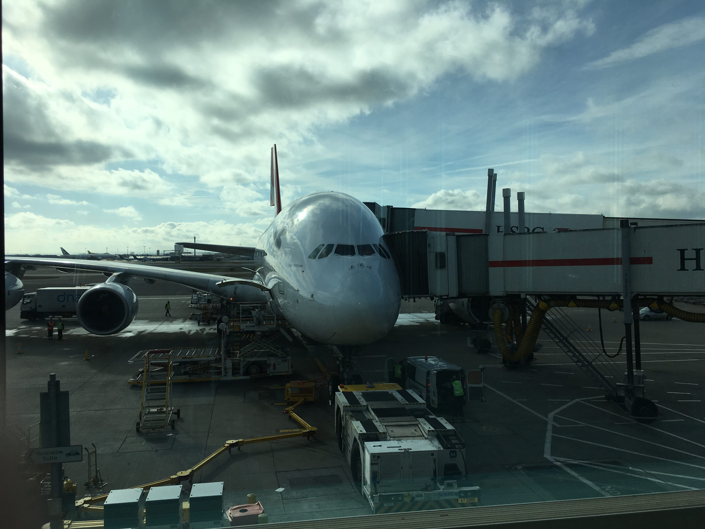
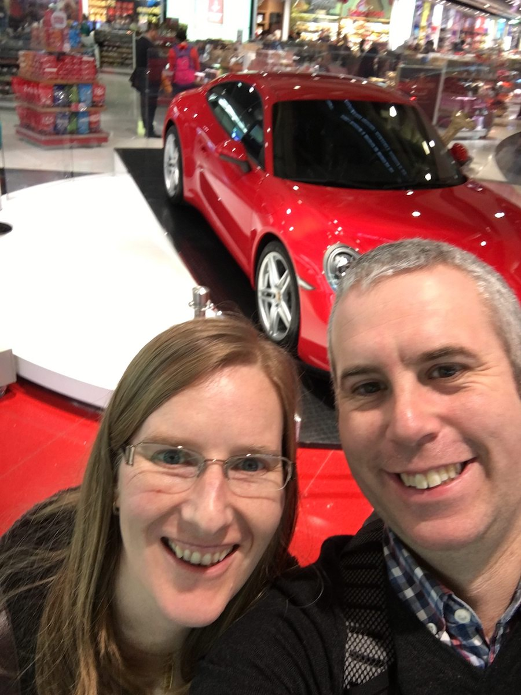

Posted on 2018-02-19 · 1 min read · Australia · Travel · Eighteen

It seemed to last forever but we made it. We left for Heathrow at 6AM and left London at around midday. I waved goodbye to home for nearly four weeks.
We stopped over in Dubai for an hour or so while the plane refuelled. We walked in circles trying to shake off the fatigue. I’d equalled one of my longest ever flights just getting to Dubai and now I was facing almost twice as much time again.
We didn’t win this car!

The Airbus A380 is a great plane. The mind boggles when you start multiplying the number of rows of passengers by the number of passengers in each row. And there are two decks!
I watched “Penguins of Madagascar” for the actor name puns and “The Captain Underpants Movie” for the fart jokes. I also watched “The Hours” because, well, I’d never watched it. There were no fart jokes. In the seat next to me, Ingrid watched all of Season 7 of Game of Thrones.
Eventually we were off the flight and getting through customs was fine. I met Ingrid’s sister Marlies and her husband Butch. We described the flight. Thankfully, it was night time and dark outside so we were well primed for falling asleep. We had arrived!